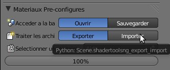
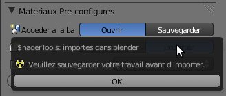
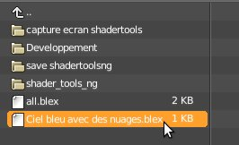
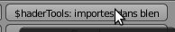
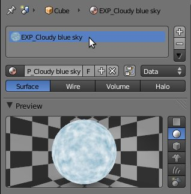

| Le Module Importer : |
| Ce module vous permet d'importer dans votre scène un matériau préalablement exporter. |
| Cliquez sur le module 'Importer' de l'interface du ShaderTools : |
|  |
| Si un message d'erreur apparaît veuillez sauvegarder votre travail avant d'importer un matériau : |
|  |
| Une nouvelle fenêtre devrait apparaître. Placez-vous dans le répertoire contenant le matériau à importer (*.blex), puis sélectionnez-le : |
|  |
| Puis cliquez sur le bouton importer en haut à droite de la fenêtre ou double-cliquez sur le matériau sélectionner pour vous permettre de l'importer dans votre scène : |
|  |
| Votre matériau devrait s'importer comme ci-dessous : |
|  |